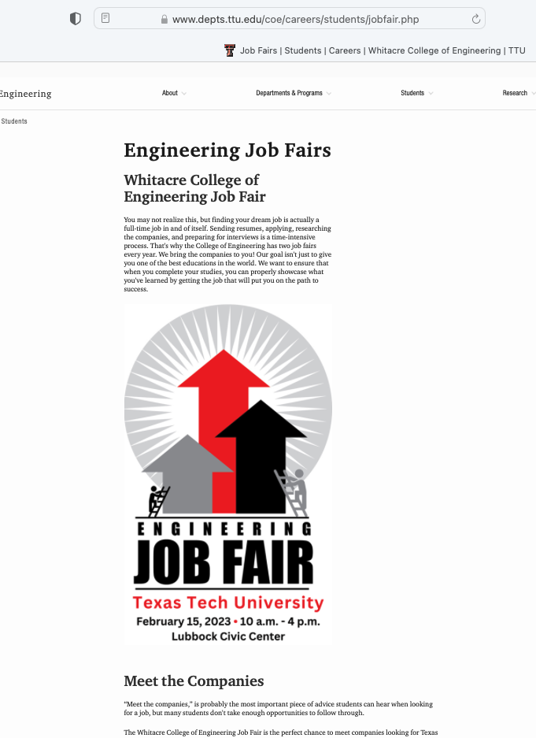
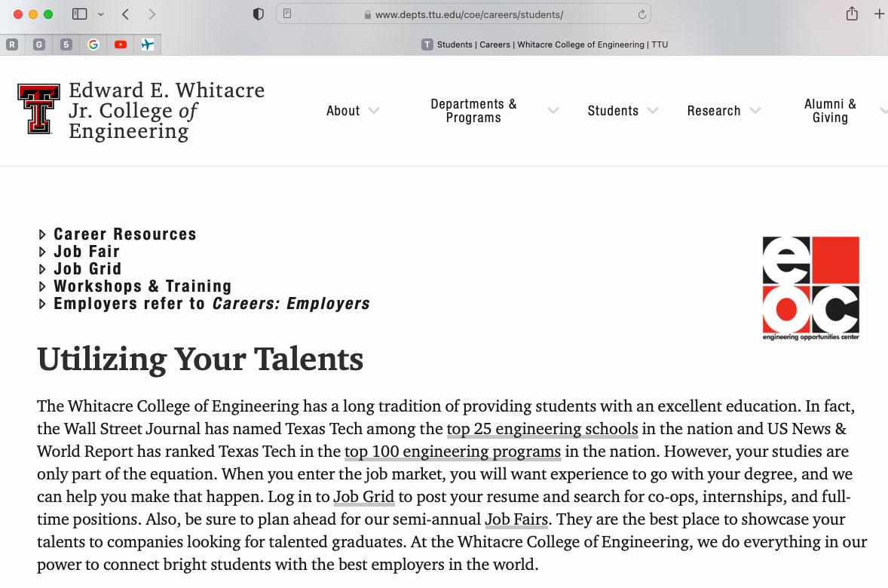
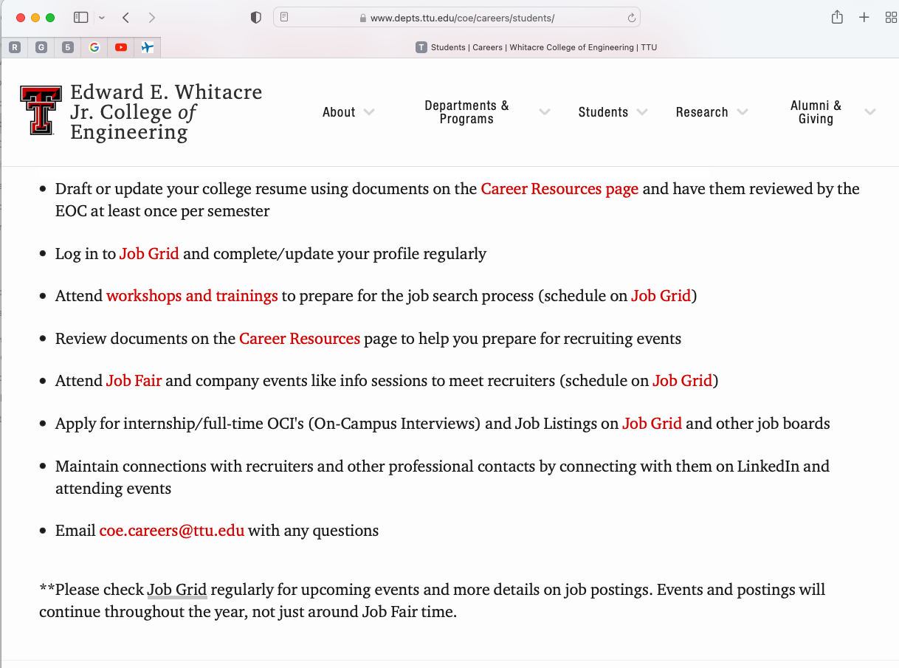

2.0 Expectations of an Engineer#
Course Website
Readings#
Videos#
Purpose#
The purpose of this lesson is to provide guidance and preparation for the upcoming Job Fair, equipping you with the mindset and foundational strategies to make the most of the opportunity. While this lesson is primarily motivational, its impact might not feel immediately tangible. However, upon reflection, you may realize you’ve absorbed valuable insights that influence how you approach the event and your career development.
Key Objectives:#
Motivate and Inspire:
Encourage a proactive and confident approach to networking and presenting yourself to potential employers.
Highlight the importance of viewing the Job Fair as a learning experience, regardless of immediate outcomes.
Preparation for Action:
Ensure you approach the Job Fair with a clear purpose and realistic expectations.
Provide strategies for effective communication, self-presentation, and professional etiquette that can help you stand out.
Set the Stage for Growth:
Plant the seeds for a growth-oriented mindset that aligns with the follow-up lesson on Attitude.
Connect the dots between motivation, preparation, and attitude, emphasizing how these elements contribute to long-term career success.
Why Motivation Matters:#
Job Fairs can feel overwhelming or intimidating, but this lesson is designed to help you see them as opportunities for growth, not just high-pressure events. By cultivating the right mindset:
You’ll view conversations with employers as a chance to learn and gain feedback, not just as “make-or-break” moments.
You’ll build resilience and adaptability, critical skills in navigating your early career path.
Remember, the focus here is less about specific knowledge or skills and more about how you approach the process. Keep this in mind as you review these notes and consider how your attitude and preparation can shape your experience.
Looking Ahead#
In the next lesson, Attitude, we’ll dive deeper into how maintaining a positive, professional, and resilient mindset can have a transformative impact on your career. For now, take the motivational messages from this lesson as an invitation to prepare mentally, emotionally, and strategically for the opportunities ahead.
Developing A Personal Career Plan#
Warning
Subsection under development
Introduction#
A question frequently asked by graduating senior students is, how do I know what job to choose? Perhaps now you are not thinking about getting a job. But imagine that in about 6 months, you find yourself with multiple job offers, as some of our students are doing. How would you answer this question? This is actually a misdirected question. More specifically:
Not a job, but a fit\(^*\)
Not what others want for you, but what you want for yourself
Not just salary, it’s about personal satisfaction
Note
\(^*\)Fit is currently (circa 2022) a trigger word in HR circles.
Job Hunting 101#
You are not looking for a job. You are looking for a good match between your skills, talents, gifts, abilities, interests and needs, and a place/way to express those in the workplace. In this way, job hunting becomes transformed from a filtered search (numbers game) to a diligent, focused inquiry for information and insight both inward (yourself) and outward (potential employers).
Exercise: What are you good at? Can you think of a way to express this in the workplace?
Note
You have to eat, have shelter, and such. While usually it is better to be a king in hell than a slave in heaven; There will be times in your career when these simple requirements (food, clothing, shelter) will dominate decisions, and that’s OK - but have an exit plan.
Do you have goals?#
It has been said that the happiest time in your life are when you are pursuing a goal. Aimlessness is not fun. What are your goals? What about after graduation? Where do you prefer to live? What type of work interests you? Do you plan to save money and grow wealth? Do you think you will continue your formal education? Want to travel? Want to start a family? Spiritual. Vocational. Educational. Financial. Personal. Your assignment gets into this.
What about multiple offers?#
Learn about the companies that appear interesting to you.
Start with research, and refine your inquiry with the interview and office (or site) visit.
This is not only a great way to make a clear impression that you are deeply interested in the company, but to communicate that you have things personal and unique to offer.
Identify what is important to you. What are the factors? Categories and subcategories.
Put weighting factors on these (point spread).
Carefully reflect on how you should rank each opportunity.
Sum them up.
Make your decision
WCOE Services#
The mighty Job Fair!
JobGrid!
If you visit WCOE pages here is the guidance for the Job Grid/Job Fairy

Other Services#
Indeed.com. I know of 2 people since 2014 that found engineering jobs and accepted them using Indeed so its not bunk.
Monster.com. A little more geared to IT and manufacturing chump jobs, but much like Indeed.
USA Jobs. All federal jobs post here - Corps of Engineers, Bureau of Reclaimation, NTSB, USGS, US EPA …. there are a fair amount of entry level engineering jobs all over the USA and globally. Many have citizenship requirement; but a large number only require right to work in USA. Its a pain in the ass to get everything uploaded, but once done it is easy to apply for new jobs as they arise - i think uploads are stored on their server for 2 years, and they email you when your data is about to pumpkin.
Note
If you are a veteran (and old enough like me), many jobs require documents that don’t exist for you - its an IQ test; I place documents that state: “At the time of my discharge such forms/requirements did not exist hence such a form is not applicable” then upload as a PDF with the proper form name to get by the computer screen. If a human ever sees your application they can institute a work around.
USA Jobs knows about this flaw, but they don’t have a fix yet.
Note
“Ok, I kind of tricked you with that job fair stuff, but you should be able to make a potential employer believe you are aware of the future expectations of a civil engineer.” The remainder of the lesson is formally addressing the actual title; i’ll try to avoid such shenanigans most of the time
Future Expectations of a Civil Engineer#
The role of a civil engineer has always been pivotal in shaping the infrastructure and urban landscapes we rely on daily. As we move further into the 21st century, the expectations for civil engineers are rapidly evolving, driven by technological advancements, environmental challenges, and the need for sustainable development.
Technological Integration
One of the most significant expectations for future civil engineers is the integration of cutting-edge technology into their work. With the advent of smart cities, engineers are now expected to be proficient in using digital tools like Building Information Modeling (BIM), Geographic Information Systems (GIS), and artificial intelligence (AI). These technologies allow for more efficient design, construction, and maintenance processes, reducing costs and improving the overall quality of projects. Engineers will need to continually update their skills to keep pace with these technological changes.
Sustainability and Environmental Stewardship
Another critical expectation is the focus on sustainability. As the world grapples with climate change and resource depletion, civil engineers are expected to design and construct infrastructure that minimizes environmental impact. This includes:
Utilizing green building materials.
Designing energy-efficient structures.
Incorporating renewable energy sources into projects.
Future civil engineers will also play a key role in developing resilient infrastructure that can withstand extreme weather events, ensuring safety and longevity in the built environment.
Global and Cultural Awareness
As the world becomes more interconnected, civil engineers must develop a global perspective. Projects often span multiple countries and require an understanding of diverse cultural, regulatory, and environmental contexts. Engineers are expected to:
Be adaptable and work effectively in multicultural teams.
Communicate across cultural and linguistic barriers.
This global awareness is essential for managing international projects and ensuring infrastructure development aligns with local needs and values.
Ethical Responsibility and Public Welfare
Ethics and public welfare have always been at the core of civil engineering, but these expectations are intensifying. Engineers are expected to:
Address social issues such as affordable housing, access to clean water, and equitable infrastructure development.
Navigate complex ethical dilemmas, balancing the needs of stakeholders while upholding public safety and welfare.
A strong commitment to ethical principles and a deep understanding of the societal impact of engineering decisions are now indispensable.
Lifelong Learning and Professional Development
Finally, future civil engineers are expected to embrace lifelong learning. The rapid pace of technological innovation, evolving environmental challenges, and shifting societal needs mean engineers must continuously update their knowledge and skills. Strategies include:
Pursuing ongoing education and certifications.
Participating in industry organizations.
Staying informed about emerging trends.
Digest
The future expectations of a civil engineer are vast and multifaceted. They encompass technological proficiency, sustainability, global awareness, ethical responsibility, and a commitment to lifelong learning. Meeting these expectations will not only your success but also contribute to the advancement of society.
Discussion#
Are any of these expectations described in the ASCE BOK? If yes where?
What do you think about the essay above? Does it coincide with your expectations and aspirations as an engineer? What’s missing?